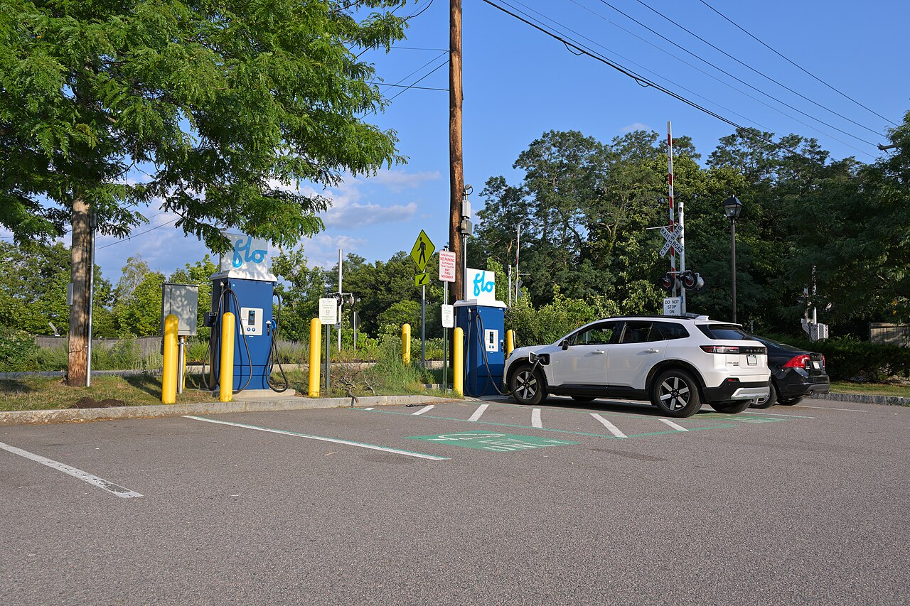

About this project
Public chargers matter most to drivers who can't plug in at home, so where they get built shapes who can realistically own an electric car. This project looks at public EV charging in Massachusetts: when it arrived, where it was built, and which companies run it. Our title asks the question behind that work. As the network grows, who is it growing for?

We used data from the Alternative Fuels Data Center at the U.S. Department of Energy, downloaded on October 12, 2026 and filtered to electric stations in Massachusetts that are public and available. That left 4,615 station records at 2,466 addresses, with 11,866 ports in total.
Three patterns stand out. The network is young, since only 1,475 of today's ports opened before 2021. It is concentrated, with 62% of ports within 25 miles of downtown Boston. It is also run by a small group of companies: ChargePoint runs 66% of Level 2 ports, while Tesla and Red E together run 58% of DC fast ports.
These patterns raise questions about fairness, but they don't settle them. Our data shows where ports are and who runs them. It doesn't show who uses them or who lives nearby, so answering "for whom" fully would take more data, such as Census demographics. We see this site as a starting point: a clear picture of what has been built so far.
Contact
Questions about the project or the data? Email achkar.na@northeastern.edu.